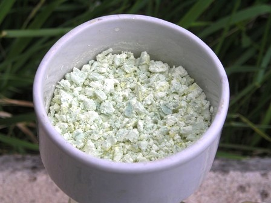

Oggi una sintesi inorganica facile facile.
La valenza più stabile del rame è due, e bivalenti (rameici -Cu2+) sono tutti i sali comuni di questo metallo, tant'è che un composto monovalente lasciato all'aria si ossida spontaneamente e velocemente.
Un'altra caratteristica è che i composti rameici sono praticamente tutti azzurri (anche per la formazione di acquacomplessi per i sali idrati), mentre i composti rameosi (-Cu+) sono tutti bianchi.
Vediamo come preparare un bel composto rameoso che non sia il solito cloruro.
In chimica organica, soprattutto per la reazione di Sandmeyer, sono usati come catalizzatori partecipanti i sali di rame monovalenti, specificamente gli alogenuri; uno di questi è il bromuro rameoso, CuBr, protagonista della preparazione di oggi.
Materiali occorrenti e procedimento:
- Rame solfato CuSO4.5H2O
- Potassio metabisolfito K2S2O5
- Potassio bromuro KBr
Sciogliere in 200 ml di acqua calda (non bollente) 30 g di CuS04•5H2O e poi aggiungere pian piano mescolando 27 g di KBr; quando è tutto sciolto la sol. diventa verdastra.
Ora aggiungere a piccole porzioni, mescolando vigorosamente, K2S2O5 (K metabisolfito); ad ogni aggiunta si svolge abbondante SO2, quindi operare in ambiente adatto.
Quando la reazione è terminata (non si svolge più SO2, circa una ventina di g di Kmetab.) si sarà formato un abbondante precipitato bianco di CuBr e la soluzione sarà diventata incolora o leggermente giallina.

Raffreddare la miscela e filtrare rapidamente il sale rameoso alla pompa, lavando bene con acqua fredda per eliminare tutti i sali solubili, senza esagerare perchè la sua solubilità in acqua fredda è piccola ma non nulla. Resa circa 15 g.
Come tutti i sali -Cu+ anche questo è facilmente ossidabile all'aria e tende ad assumere una tinta verdastra in superficie; il tempo di fare le foto e poi l'ho imprigionato ancora leggermente umido nel suo contenitore pieno e ben tappato in attesa di futuri sviluppi, magari secondo Sandmeyer...

...questa importante reazione di sintesi organica di sostituzione nucleofila radicalica (e che fa uso di prodotti come quello trattato) prende il nome dal chimico svizzero Traugott Sandmeyer, che la scoprì nel 1884.
Essa conduce alla produzione di alogenuri aromatici partendo da sali di diazonio, a loro volta prodotti per diazotazione di ammine aromatiche.
2 commenti